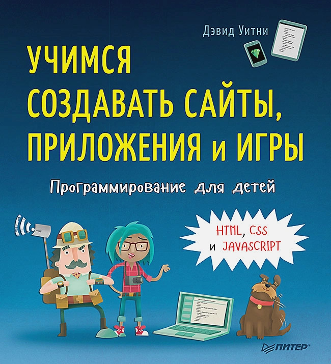
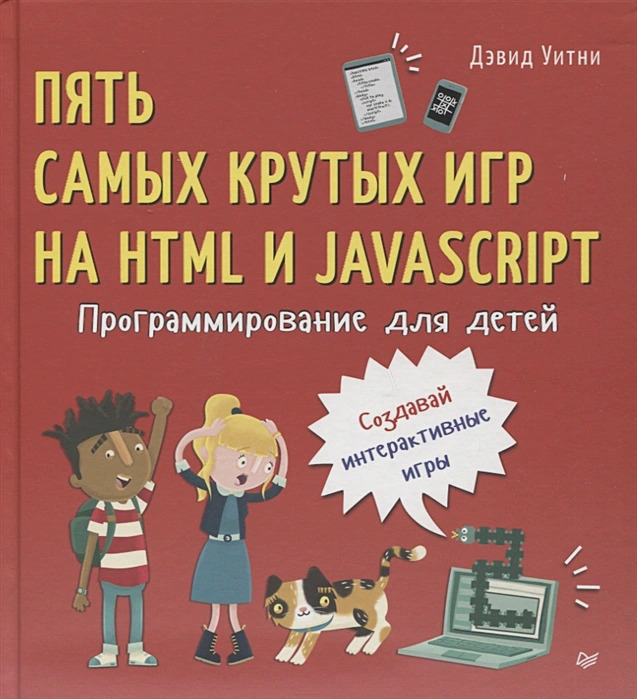
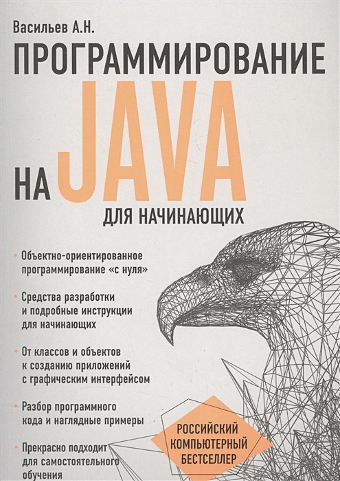
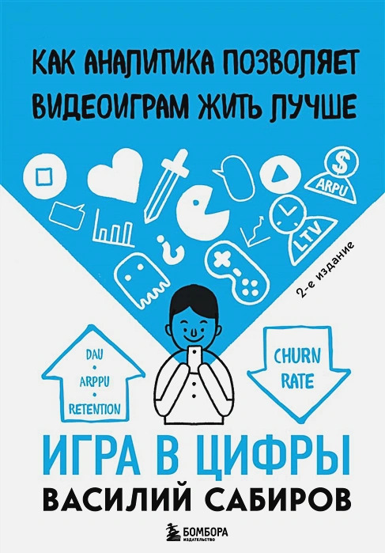

Книга №1
Хотите научиться создавать программы и сайты, но не знаете, как это сделать? Тогда эта книга - то, что вам нужно! Она состоит из двух частей: в первой части вы изучите два популярных языка программирования Scratch и Python, а во второй части узнаете, как создавать сайты с помощью HTML и CSS. Сама книга состоит из последовательных заданий, которые вы будете выполнять под чутким руководством авторов книги. Вы сами напишите свои первые программы, узнаете, как работает программный код, как использовать логические операторы, циклы, условия и другие элементы программирования. Отдельные разделы книги посвящены тому, как создавать собственные полноценные игры! .В этой книге содержится минимум необходимой теории и максимум полезной практики, которая заставит вас почувствовать себя настоящим разработчиком программ и сайтов! Хотите научиться создавать программы и сайты, но не знаете, как это сделать? Тогда эта книга - то, что вам нужно! Она состоит из двух частей: в первой части вы изучите два популярных языка программирования Scratch и Python, а во второй части узнаете, как создавать сайты с помощью HTML и CSS. .Сама книга состоит из последовательных заданий, которые вы будете выполнять под чутким руководством авторов книги. Вы сами напишите свои первые программы, узнаете, как работает программный код, как использовать логические операторы, циклы, условия и другие элементы программирования. Отдельные разделы книги посвящены тому, как создавать собственные полноценные игры! .В этой книге содержится минимум необходимой теории и максимум полезной практики, которая заставит вас почувствовать себя настоящим разработчиком программ и сайтов!
Хотите научиться создавать программы и сайты, но не знаете, как это сделать? Тогда эта книга - то, что вам нужно! Она состоит из двух частей: в первой части вы изучите два популярных языка программирования Scratch и Python, а во второй части узнаете, как создавать сайты с помощью HTML и CSS.
Книга№2
Думаешь, программировать — это сложно? Вовсе нет! Профессор Бейрстоун и доктор Дэй (и, конечно, Эрнест) играючи научат этому всего за шесть увлекательных приключений! Создавать собственные сайты, игры или приложения с помощью HTML, CSS и JavaScript — это весело и увлекательно. Учитесь вместе с юными программистами из Young Rewired State, создающими технологии будущего (Guardian). Думаешь, программировать — это сложно? Вовсе нет! Профессор Бейрстоун и доктор Дэй (и, конечно, Эрнест) играючи научат этому всего за шесть увлекательных приключений! Создавать собственные сайты, игры или приложения с помощью HTML, CSS и JavaScript — это весело и увлекательно. Учитесь вместе с юными программистами из Young Rewired State, создающими технологии будущего (Guardian). Думаешь, программировать — это сложно? Вовсе нет! Профессор Бейрстоун и доктор Дэй (и, конечно, Эрнест) играючи научат этому всего за шесть увлекательных приключений! Создавать собственные сайты, игры или приложения с помощью HTML, CSS и JavaScript — это весело и увлекательно Учитесь вместе с юными программистами из Young Rewired State, создающими технологии будущего (Guardian).
Думаешь, программировать — это сложно? Вовсе нет! Профессор Бейрстоун и доктор Дэй (и, конечно, Эрнест) играючи научат этому всего за шесть увлекательных приключений! Создавать собственные сайты, игры или приложения с помощью HTML, CSS и JavaScript — это весело и увлекательно. Учитесь вместе с юными программистами из Young Rewired State, создающими технологии будущего (Guardian).
Книга№3
Думаешь, программировать — это сложно? Вовсе нет! Научись программировать, создавая игры на HTML и JavaScript. "Приключения Марио" и "Майнкрафт" познакомят с циклами, таймерами, подсчетом очков, работой с графикой и даже с искусственным интеллектом. Краткие и простые объяснения позволят легко создать свою игру. В начале каждой главы тебя ждет описание задачи от клуба "Счастливый кот". Тебе все расскажут об игре, которую хотят создать члены клуба. Код каждой игры разбит на небольшие фрагменты. Следуя пошаговым инструкциям, ты сам напишешь игру от начала и до конца. К концу каждой миссии у тебя будет созданная своими руками игра и приобретенные навыки. Поиграй, отдохни, а потом зайди на сайт издательства Питер за новыми книгами по программированию.Думаешь, программировать — это сложно? Вовсе нет! Научись программировать, создавая игры на HTML и JavaScript. "Приключения Марио" и "Майнкрафт" познакомят с циклами, таймерами, подсчетом очков, работой с графикой и даже с искусственным интеллектом. Краткие и простые объяснения позволят легко создать свою игру. В начале каждой главы тебя ждет описание задачи от клуба "Счастливый кот". Тебе все расскажут об игре, которую хотят создать члены клуба. Код каждой игры разбит на небольшие фрагменты. Следуя пошаговым инструкциям, ты сам напишешь игру от начала и до конца. К концу каждой миссии у тебя будет созданная своими руками игра и приобретенные навыки. Поиграй, отдохни, а потом зайди на сайт издательства Питер за новыми книгами по программированию.
Думаешь, программировать — это сложно? Вовсе нет! Научись программировать, создавая игры на HTML и JavaScript. "Приключения Марио" и "Майнкрафт" познакомят с циклами, таймерами, подсчетом очков, работой с графикой и даже с искусственным интеллектом. Краткие и простые объяснения позволят легко создать свою игру. В начале каждой главы тебя ждет описание задачи от клуба "Счастливый кот".
Книга№4
Васильев А.Н. «Программирование на Java» - Объектно-ориентированное программирование «с нуля». - Средства разработки и подробные инструкции для начинающих. - От классов и объектов к созданию приложений с графическим интерфейсом. - Разбор программного кода и наглядные примеры. - Прекрасно подходит для самостоятельного обучения. В своей новой книге автор популярной методики обучения языкам программирования Алексей Васильев приглашает читателей в увлекательное путешествие по Java. Без сомнения, этот язык сегодня является одним из наиболее востребованных в методологии объектно-ориентированного программирования и прекрасно подходит для освоения его азов. Простым и понятным даже для начинающих языком автор рассказывает обо всех тонкостях программирования на Java, начиная при этом с самых основ, таких как классы и объекты. В каждой главе этой книги вы найдете как необходимую теоретическую базу, так и подробный разбор кода с комментариями автора, помогающими лучше понять пройденный материал. В конце этого путешествия читателей ждет успешная реализация полученных навыков и знаний — вы без труда сможете создавать апплеты и приложения с графическим интерфейсом самостоятельно. Никаких дополнительных источников и материалов, кроме тех, что можно бесплатно скачать по ссылке ниже, вам не понадобится — просто откройте книгу, и вперед, к покорению вершин Java-программирования!
В своей новой книге автор популярной методики обучения языкам программирования Алексей Васильев приглашает читателей в увлекательное путешествие по Java. Без сомнения, этот язык сегодня является одним из наиболее востребованных в методологии объектно-ориентированного программирования и прекрасно подходит для освоения его азов.
Книга №5
Успешная игра — это не просто захватывающие уровни и привлекательный дизайн. Это, в первую очередь, гармоничное сочетание огромного количества факторов, которые вместе создают положительный пользовательский опыт. Такая игра вовлекает и удерживает пользователей и, конечно же, приносит прибыль. Почему одну игру люди бросают, даже не пройдя до конца туториал, а в другую играют ежедневно на протяжении многих лет? Спросите игрового аналитика! Василий Сабиров, сооснователь аналитической платформы devtodev, знает, как сделать так, чтобы ваша игра чувствовала себя лучше. Вы узнаете, чем занимается игровой аналитик на всех этапах разработки игрового проекта, научитесь отличать хороший отчет от плохого (а это не всегда очевидно!), познакомитесь с основными аналитическими методами, метриками, инструментами и показателями, а также специфическими особенностями аналитики в сфере разработки игр. Всё это на конкретных примерах и реальных кейсах из практики devtodev.
Успешная игра — это не просто захватывающие уровни и привлекательный дизайн. Это, в первую очередь, гармоничное сочетание огромного количества факторов, которые вместе создают положительный пользовательский опыт. Такая игра вовлекает и удерживает пользователей и, конечно же, приносит прибыль.